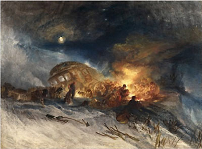
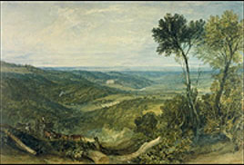

Joseph
Mallord William Turner (1775-1851)
The son of
a London barber, Turner rapidly attained prominence as an artist,
becoming a Royal Academician in 1802 and Professor of Perspective
at the Academy from 1807-1837. His great achievement was to elevate
landscape painting in England from a topographical record to a
vehicle for imaginative expression of the highest order, informing
his work with a wealth of references to literature, classical
mythology and the art of the past. Although his career was focused
on London, he was an indefatigable traveller throughout Britain
in the 1790s, then on the Continent between 1802 and 1845, where
he was particularly drawn to the sublimity of mountain scenery
and to the human bustle and historical associations of rivers
and ports.
In
the late 1820s Turner conceived a plan to leave the contents of
his studio to the nation with the intention that a special gallery
should be built for the purpose of their display by the Trustees
of the National Gallery. This did not happen until the Clore Gallery
was opened as an adjunct to the Tate Gallery (now Tate Britain)
in 1986, when the nineteen thousand drawings, watercolours and
sketchbooks which had been housed in The British Museum since
1931, were united with the oil paintings from the Turner Bequest.
The library of the Department of Prints and Drawings contains
a photocopy of Turner's will with its four codicils; a microfilm
of the entire Bequest is also available for consultation.
Above:
J.M.W. Turner, Messieurs les voyageurs on their return from
Italy (par la diligence) in a snow drift upon Mount Tarrar - 22nd
of January 1829, watercolour with bodycolour, 1829
Turner sketched
constantly, mainly in pencil, but occasionally using watercolour,
either on the spot or as a later addition. While most of these sketches
are now in Tate Britain, the British Museum's watercolours are largely
finished works, made for exhibition at the
Royal Academy, as the basis for engravings, or commissioned by individual
patrons. They came to the Department through four main bequests
- Salting, Henderson, Sale and Lloyd. The last contains sixty-one
of the freshest examples, carefully preserved by their donor from
exposure to harmful natural light, which by the terms of the Lloyd
bequest can never be lent.
The British
Museum owns a virtually complete collection of prints after Turner,
nearly nine hundred compositions. He exploited printmaking as a
means of self-advertisement in his Liber Studiorum, a series
of seventy-one prints in etched outline and mezzotint. They were
based on monochrome drawings inspired by Claude Lorrain's Liber
Veritatis (1635-82), and were intended not only as a record
of Turner's work, but also as a kind of visual treatise on landscape
art.
Above: J .M.W. Turner, Vale of Ashburnham,
watercolour, 1816
Works
in Other Collections
| London |
British
Library |
| |
Tate Britain |
| |
Victoria
and Albert Museum |
| UK
|
Ashmolean
Museum, Oxford |
| |
Fitzwilliam
Museum, Cambridge |
| |
Manchester
City Art Gallery |
| |
National
Gallery of Scotland, Edinburgh |
| |
Whitworth
Art Gallery, Manchester |
| Ireland |
National
Gallery of Ireland, Dublin |
| USA |
Yale Center
for British Art, New Haven |
Further
Reading
Finberg, A.J.
A Complete Inventory of the Drawings of the Turner Bequest.
2 vols. HMSO, 1909
Gage, J.
Turner: 'A Wonderful Range of Mind'. Yale University Press,
1987
Hermann, L.
Turner Prints: The Engraved Works of J. M. W. Turner. Phaidon
Press, 1990
Joll, E.[et
al.] eds, The Oxford Companion to J.M.W.Turner. Oxford
University Press, 2001
Rawlinson, W.G..
Turner's 'Liber Studiorum'. Ernest Benn, 1924
Rawlinson, W.G..
The Engraved Works of J. M. W. Turner. Macmillan, 1880
Shanes, E. Turner:
The Great Watercolours. Royal Academy, 2000
Sloan, K. J.
M. W. Turner: Watercolours from the R. W. Lloyd Bequest. British
Museum Press, 1998
Wilton, A. Turner
in the British Museum: Drawings and Watercolours. British Museum
Publications, 1975
Wilton, A. The
Life and Work of J. M. W. Turner [with a complete catalogue of the
watercolours]. Academy Editions, 1979
Wilton, A.
Turner in his Time. Thames & Hudson, 1987
|